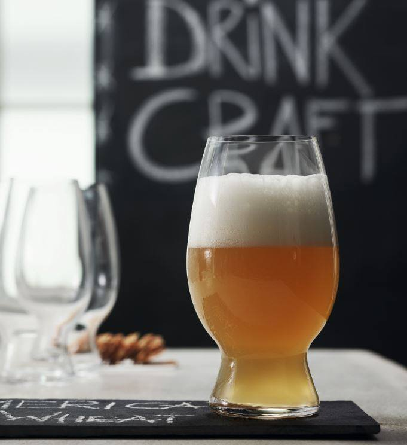
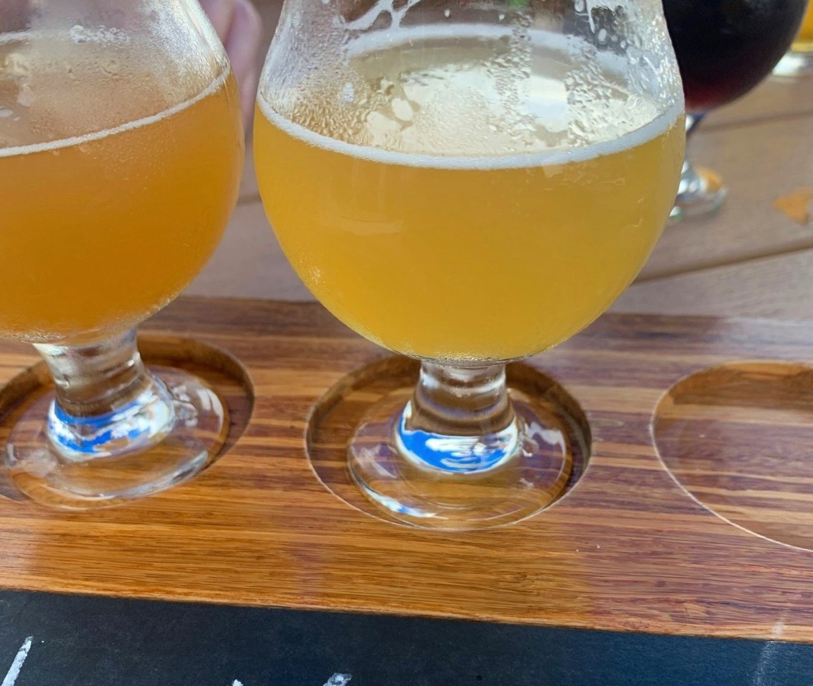

American Wheat
As cervejas fabricadas com malte de trigo são geralmente associadas a dois estilos principais: a Weizenbier ou Hefeweizen (também chamada de Weiss), de origem alemã, e a Witbier, produzida principalmente na Bélgica e na Holanda. Enquanto as cervejas do estilo Weizen são bastante encorpadas e possuem aromas de banana e cravo, as Witbiers são mais leves e levam especiarias como coentro e casca de laranja em suas receitas.
Há, no entanto, um outro tipo de cerveja de trigo que surgiu nos Estados Unidos na década de 80: a American Wheat Ale. Esse estilo é inspirado nas Weizen, mas não possui os sabores de banana e cravo como as tradicionais.
A nossa Wheat Ale é uma cerveja mais leve, clara, refrescante, com pouca formação de espuma e de sabor mais limpo. Com o máximo de 30% de trigo na receita e o blend de lúpulos logramos um perfeito equilíbrio.
Aroma cítrico de bergamota e especiarias aportados pelo lúpulo alemão mandarina bavaria e o americano mosaic. Muito baixo, quase nulo o aroma de trigo, grão, pão ou massa.
O amargor e o dulçor são normalmente equilibrados, mas tende para o amargo com sabor cítrico ou frutado picante, e um toque de trigo.
Produzidas geralmente na temporada de verão, muitas cervejarias gostam de servi-la com rodelas de limão para valorizar essas características.
TELEBIER
Entregamos somente para a região de Torres e suas cercanias.
Click nos links abaixo e fale diretamente pelo whatsapp com Diego ou Cristiano, Obrigado!
"Era um homem sábio aquele que inventou a cerveja." – Platão